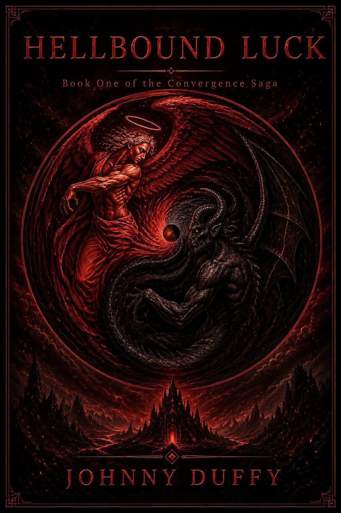

Book One · THE CONVERGENCE SAGA
Hellbound Luck
Bad luck was only the beginning.
Jake Morrison has always believed the universe has it out for him. Jobs go wrong. Relationships collapse. Accidents find him with suspicious consistency. Then one impossible night reveals that his lifelong bad luck may never have been random at all.
Available on Amazon. Additional format-specific links can be added when confirmed.
THE STORY
About Hellbound Luck
Jake Morrison has always believed the universe has it out for him. Jobs go wrong. Relationships collapse. Accidents find him with suspicious consistency. Then one impossible night reveals that his lifelong bad luck may never have been random at all.
Pulled into a supernatural world hidden beneath ordinary life, Jake encounters powers and dangers he never knew existed—and learns that his own place among them is far more complicated than he could have imagined. With Lilith, a centuries-old demon hunter, as his reluctant guide, he must survive long enough to understand what is happening to him.
What begins as a fight to stay alive becomes a question of identity. If the truth about where Jake comes from is real, he must decide whether blood determines destiny—or whether the choices he makes after learning the truth matter more.
SPOILER-FREE PREVIEW
A glimpse into the story
Jake Morrison has learned not to trust good days. Whenever life starts looking promising, experience tells him to wait for the bill. But on the night everything changes, the familiar pattern of bad luck finally breaks open into something impossible—and Jake discovers that the explanation may be stranger than the curse itself.
Marketing preview — designed to preserve the novel's major discoveries.
READ THE SERIES